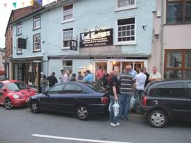

BOWLED OVER IN
Up for
it were:
Bunked up
in the
In the
And The
Poppy House put up Malc and Mathew Jay.
Joining us
on the day of the walk were Mothy, Heckey Thump and Sparklet.
Pedro
dibbed out, probably on some exotic trip abroad again. Mr Tahoohigh dibbed
out on family duty attending his daughters badly planned graduation. Mothy said
he’d gone to
Route:
South west along the Shropshire Way
to Pant Edward barn, turning north east through the centre of Blakeridge Woods follwing the
path down to Cefn Einon to
Shadwell Hall and Hergan. Turning north through Middle Knuck we
beared east to Lower Knuck, through Birches Bank Wood, Knuck
Wood, Reith Farm and north east along the Shropshire Way to Fron,
Reilthtop, Middle Woodbatch,
Wood House, Cwmmawr Dingle and returning to Bishops
Castle.
Over 12
months of intense planning by Dasher had finally come to fruition. Reckie’s had been
carried out, assisted by Pedro and Keithee’s up for it, pre-booking the 3 Tunns brewery visit, accommodation and the indian. It had been sorted out to the nth
degree. Even the no of hand pulls at
each venue had been noted; 24 at the Six Bells, 18 at the Castle Hotel, and 12
at the Vaults. A truly high standard of organisation to which
anyone must aspire.
Corky,
arriving first in the
As we
waited, Jacko confided that he was going to be
sensible on this trip, avoiding ale, and drinking only healthy drinks. Corky suggested a quick half in the 3 Tuns while we waited for everyone to arrive. ‘Stuff it’, said Jacko,
‘I’ll just have one!’
We gathered
in the small bar of the 3 Tuns, not knowing its full
extent until the following night. 1642
was on tap at 3.8% and Triple x at 4.3%.
Malc Jay
arrived with Mathew Jay who sadly was still being weaned off fizzy lager. According to the programme of events, Corky
noticed that the first evening was free, and suggested a take out of ale to
drink the following morning. He was
quickly corrected by Dasher, ‘having the evening free’, didn’t mean free ale! Spikelet arrived a little later on his bike after
a prolonged ‘session’ with Pam on the doorstep, so we stopped a while longer.
Hunger
pangs were making more noise than the grandfather’s clock, forcing several to
slip next door into the chippie. Keithee
and Stubbee stood at the pub window scoffing chips. A big sausage was flashed, tempting the rest
who soon joined forces moving into a small landscaped square, where Dasher
stroked a pussy and Mothy noted the strong whiff of fish in the air.
A welcoming
tour of the Six Bells brewery by ‘
The Stubmeister asked the obvious but inquisitive question as
to why Titanic ales weren’t available, being informed that only
Many hands then
assisted in the largest erection of the weekend in the garden. The marquee was well held down by a hundred
rolls of gaffa tape in preparation for predicted bad
weather conditions and keeping the hundreds of beer guzzlers dry who would be huddled
inside it.
Utterley mentioned a 70 mile sponsored bike ride which he was promoting. Would that be a 70 miles round trip, or would it be there and back?’ asked Spike. Surprising what a couple of pints does to the brain.
The evening
ended with games of backgammon and chess in the Castle Hotel at the top of the
town; a weird combination. The chinese takeaway appeased several
whilst Jacko slipped down a couple of tasteless
battered eals.
Spikelet shared a bag of over-salted chips with Mothy; returning at
midnight for a large sausage to take the taste away. At 4am Jaycee woke up swearing never to drink
again!
The Friday
morning began for those who’d stayed over, with a hearty breakfast at the digs.
The gang assembled outside the
A hedgerow which had overgrown the path since the reckie delayed progress for a short while before we got back on track. Sitting on a pile of logs for breakfast we looked like a right bunch of fellers. One such fella, Granpop Bill, had little to eat, having eaten his packed lunch of pasties the previous day after feeling peckish. It did nothing to slow him down though. Having lost a few pounds, Bill took the walk easily in his stride, whilst a spare bottle of lucozade came to Jacko’s aid.
A much
deserved pint and buffet lunch was anticipated as we waited on the outside stage
at the 6 Bells.
There were a few mutterings however as the first show of food was put
on. Big
The live Ashes
tour was found broadcasting in the Boars Head, an Ansells
pub half way back up the high street.
From 6pm onwards a fine selection of ales for the festival would be
available, but for now we made do with Speckled Hen and Bombardier. Granpop Bill
settled down with a smile on his face.
Yup and Stub popped into the local co-op and loaded the fridge with
bottles of cobra ready to pick up before the visit to the Indian later in the
evening.
After a
short break back at the digs, we met up at the 3 Tuns
at 6ish. Thoughts and discussions turned
to the Ground force taking over Granpop Bills garage
and turning it into the Squarry Club’s Brewery.
Milda wouldn’t mind, we told Bill; she would
no doubt be making bacon butties for us as the conversion took place.
An outside
bar had been set up providing even more beers.
JayCee struggled with his ginger tosser; nothing unusual there.

Wine and the
chilled cobras were collected from the co-op and we waited outside the
We stumbled
out of the door carrying Granpop Bill who was
obviously bowled over with the ‘extras’ during the afternoons play. A steadying hand was provided by Corky back
to his digs where Midweek Tone tucked him up in bed and saw the silly mid off.
After
jiving at one of the other trendy pubs, the Crown & Anchor Vaults, JayCee, Keithees up for it, Jacko, Yup and Stub returned to the digs to watch Leslie
Nielsen in some film with a ‘nice beaver’, before falling asleep one by one.
Breakfast
soon came around. Too early for Dasher
who had been kept awake until 4am by the snoring of Keithee’s up for it. Spikelet also seemed to be having troubles,
disappearing and making several visits to the bathroom. Must have been that extra
sausage at midnight.
Utterley
took a shine to a fairy, but enough said about that. And Granpop Bill’s
coat was posted to him some days later after he’d left it behind for four
runs.
An
abundance of merriment and another cracking walk.
Many thanks
to Dasher for organising it with the aid of Pedro and Keithee’s up 4 it. Next summer its Mr Tahoohighs
chance to impress again with a proposed visit to the Thornbridge
Brewery at Bakewell.
Best
regards
Yupmeister
(enjoy yer sqwalks)